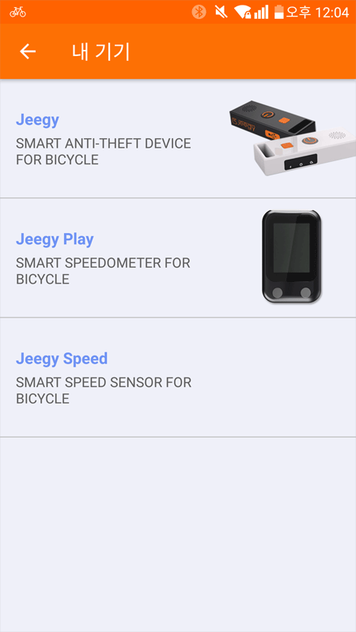
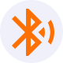

Jeegy 사용 설명서
1. 기기등록
메인 메뉴의 ‘내 기기'로 기기 목록 화면으로 이동합니다.
당사에 등록할수 있는 디바이스 목록 3종류가 뜹니다. 그 중 본인이 보유한 기기를 등록합니다. 해당하는 기기 목록을 누르면 기기등록 화면으로 이동합니다
검색된 기기를 클릭하여 등록을 합니다.
* 기기가 가까운 순으로 표시됩니다.
* 기기가 전원이 꺼져 있거나, 다른 스마트폰과 연결되어 있으면 검색이 되지 않습니다.
* 동일 종류의 기기는 하나만 등록할 수 있습니다.
* 이미 등록되어있는 기기는 등록할 수 없으며, 다른 계정으로 재등록할 경우는 기존 계정에서 등록을 해제해야 합니다.
기기가 검색되면 확인 버튼을 눌러 등록을 완료합니다.
기기가 등록되어 있는 경우에는 기기목록을 클릭하면 기기설정 화면으로 이동합니다.
2. 기기연결 및 해제
* 기기가 등록되면 자동으로 기기와 연결을 시도합니다.
* 사용자가 강제로 연결을 해제하지 않는 이상 연결이 끊어지면 자동으로 연결을 시도합니다.
* 스마트폰 기종에 따라 연결시간에 차이(약 1분 이내)가 있습니다.
메인 화면에서 기기와 연결 상태를 확인 할 수 있습니다. 지기바이크와 지기 플레이는 동일하게 적용됩니다.
<연결상태 표시> 기기의 배터리 잔량을 표시합니다. 기기가 연결됨 기기와 연결 시도중 기기와 연결이 해제됨
<기기 연결 버튼> 기기와 연결을 시도합니다. 기기와 연결시도를 중지합니다. 기기와 연결을 해제합니다.
3. 기기설정 및 삭제
3.1 기기 환경설정
메인메뉴에서 ‘내 기기'메뉴를 클릭하여 이동합니다.
등록된 기기를 클릭하면 설정화면으로 이동합니다.

- 기기 정보: 기기의 블루투스 주소를 표시합니다.
- 민감도: 도난방지 모드에서 움직임 감도를 ‘상', ‘중', ‘하’ 중에서 변경할 수 있습니다.
- 배터리 알람: 기기의 배터리가 설정한 수치 이하로 떨어지면 스마트폰의 알람으로 알려줍니다.
* 민감도 설정은 기기가 연결되어 있을 때만 표시됩니다.
3.2 기기 삭제
* 기기가 연결되어 있으면 ‘삭제’버튼은 표시되지 않습니다. 메인화면에서 기기연결 해제 또는 블루투스기능을 해제 후 시도해 주시기 바랍니다.
4. 도난방지 모드
4.1 도난방지모드 실행 및 종료
잠금 버튼을 클릭하여 기기를 도난방지 모드로 변경할 수 있습니다.
도난방지 실행중, 클릭시 도난방지 모드 해제 도난방지 중지됨, 클릭시 도난방지 모드 실행
* 도난방지 모드일 경우에는 기기와 연결을 해제할 수 없습니다.
* 기기가 연결되어 있지 않으면 도난방지 버튼
이 비활성화 되어 있습니다.
4.2 라이딩 중 도난방지
* 라이딩중 도난방지 모드는 ‘일시정지’ 모드로 진입 후 사용할 수 있습니다.
라이딩 중 ‘일시정지'버튼을 클릭합니다.
일시정지 화면에서 ‘‘잠금버튼’을 클릭하면 ‘도난방지 모드'가 실행됩니다.
* 기기가 등록되어 있지 않으면 ‘잠금 버튼'은 표시되지 않습니다.
‘도난방지 모드'가 실행되면 위와 같은 화면으로 변경되고, ‘잠금해제'버튼을 클릭하면 ‘도난방지 모드’가 해제됩니다.
4.3 소리 울리기 및 끄기
도난방지 모드가 작동되면 스마트폰 앱으로 알람이 울립니다.
* 알람 방식(진동 및 소리)은 설정메뉴에서 변경할 수 있습니다.
팝업에서 ‘확인'을 누르면 기기와 스마트폰의 알람이 종료됩니다.
도난방지 모드일 경우 임의로 기기에서 소리가 울리게 할 수 있습니다.
 기기에서 소리를 울리게 합니다.
기기에서 소리를 멈추게 합니다.
기기에서 소리를 울리게 합니다.
기기에서 소리를 멈추게 합니다.
* 도난방지 모드가 아닐 경우 버튼은 표시되지 않습니다.
4.4 도난방지 모드 상태바
(iOS 위젯 기능 미지원으로 아이폰에서는 해당 기능을 제공하지 않습니다.)도난 방지 모드가 실행되면 스마트폰의 상태바에 표시되고 앱을 실행시키지 않아도 설정을 변경할 수 있습니다.
- 소리울리기 : 기기에서 소리가 울리게 합니다.
- 소리끄기 : 기기에서 소리가 멈추게 합니다.
- 종료 : 도난방지 모드를 종료합니다.
5. 휴대폰 찾기 기능
도난 방지 모드가 실행되면 스마트폰의 상태바에 표시되고 앱을 실행시키지 않아도 설정을 변경할 수 있습니다.
- 소리울리기 : 기기에서 소리가 울리게 합니다.
- 소리끄기 : 기기에서 소리가 멈추게 합니다.
- 종료 : 도난방지 모드를 종료합니다.
앱의 팝업에서 ‘확인’버튼을 누르면 알람이 종료 됩니다.
6. 자가진단
6.1 기기가 연결되지 않을때
스마트폰 기종에 따라 연결시간이 차이(약 1분 이내)가 있습니다.
연결시도가 1분이상 지속된다면 아래와 같은 방법으로 해결할 수 있습니다.
* 스마트폰의 블루투스가 켜져 있는지 확인
* 기기의 전원이 켜져 있는지 확인
* 스마트폰의 블루투스를 껐다가 켭니다.
* 기기의 전원을 껐다가 켭니다.
* 스마트폰의 전원을 껐다가 켭니다.
* 앱에서 로그아웃한 후 스마트폰의 애플리케이션 관리자에서 앱의 데이터를 삭제합니다.
* 앱을 재설치 합니다
위와 같은 방법으로도 해결되지 않으면 구매처 및 support@cssmart.co.kr로 문의 주시기 바랍니다.
6.2 기기의 전원이 켜지지 않을 때
기기의 배터리가 방전되었을 가능성이 있습니다. 기기를 충전 후 다시 시도해 주시기 바랍니다. 충전 후에도 전원이 켜지지 않으면 구매처나 고객지원센터로 문의 주시기 바랍니다.
6.3 기기가 전원이 꺼지지 않을때
도난방지 기능 특성상 기기가 스마트폰과 연결이 되어 있으면 전원을 끌수 없습니다.
앱에서 연결을 해제한 후 전원을 끌 수 있습니다.
6.4 기기와 통신이 원활하지 않을때
블루투스는 사용환경에 따라 수신감도가 달라질 수 있습니다.사용 전에 사용환경을 확인해주시기 바랍니다.
사용환경 연결 거리(상황에 따라 차이가 있을 수 있습니다.
① Wifi가 적은 개활지 : 약 50 ~ 70m
① Wifi가 많은 개활지 : 약 30m
② 유리벽 : 약 20m
⑤ 철문 콘크리트 벽 : 약 10m
④ 건물 : 10 ~ 20m
⑤ 통신에 영향을 미치는 재질의 휴대폰 케이스 : 정상 상태의 절반 거리
신호를 약하게 만드는 원인은 아래와 같습니다.
① 장애물(문,벽,건물 등)에 의한 신호 감소
① 휴대폰 케이스에 의한 신호 감소
② 많은 Wifi에 의한 신호 충돌